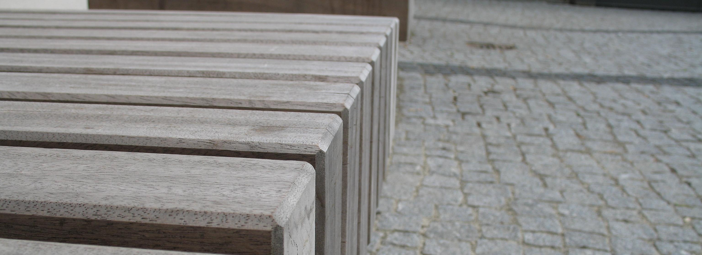
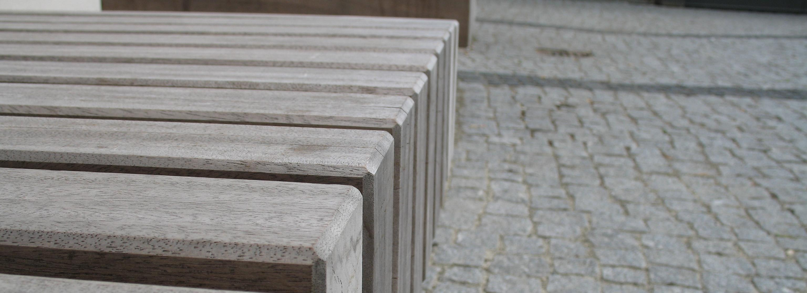

Uma Aplicação 3D
Joilnen Leite
Julio 2023
Baseada em Ferramentas Open Source


| Key | Function |
|---|---|
| enter/space/right arrow | advance |
| backspace/left arrow | go back |
| g | prompt: go to slide |
| home/pos1 | jump to start slide |
| end | jump to end slide |
| shift +/- | zoom in/out |
| F11 | fullscreen mode |
| n | show/hide presenter notes |
| t | toggle transitions |
| p | open presenter frame |
| . | sneak forward in presenter frame |
| , | sneak backward in presenter frame |
Thanks to Luke Mahé and Marcin Wichary for the original Google slides template.